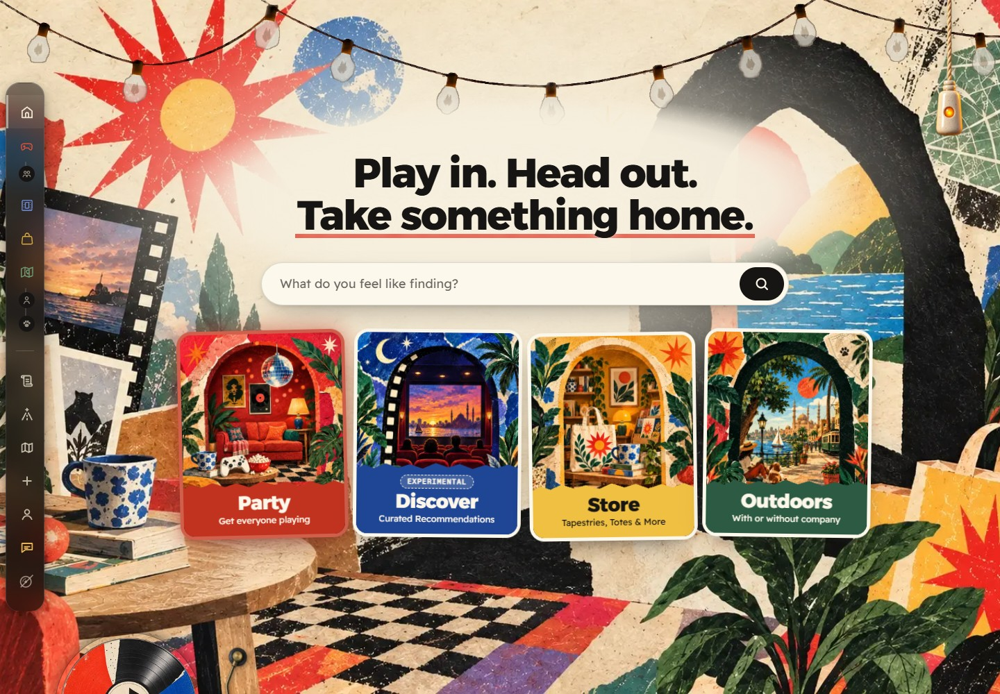
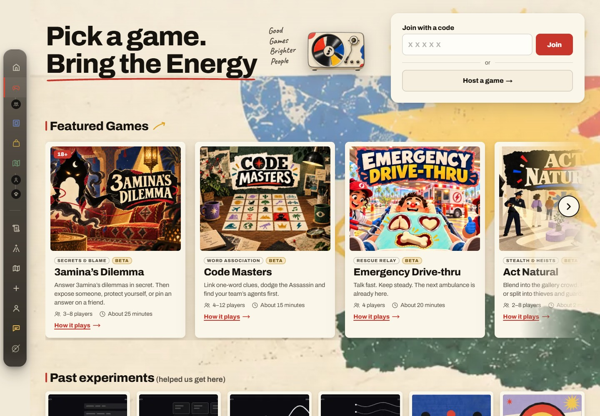
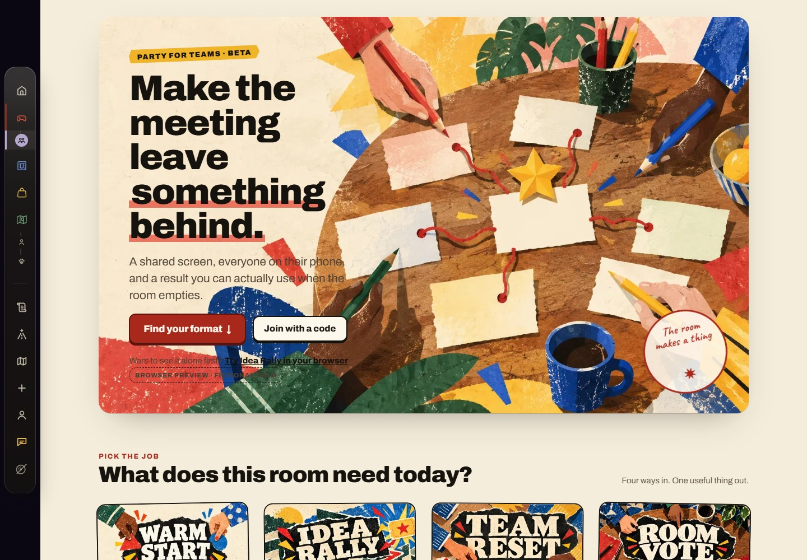
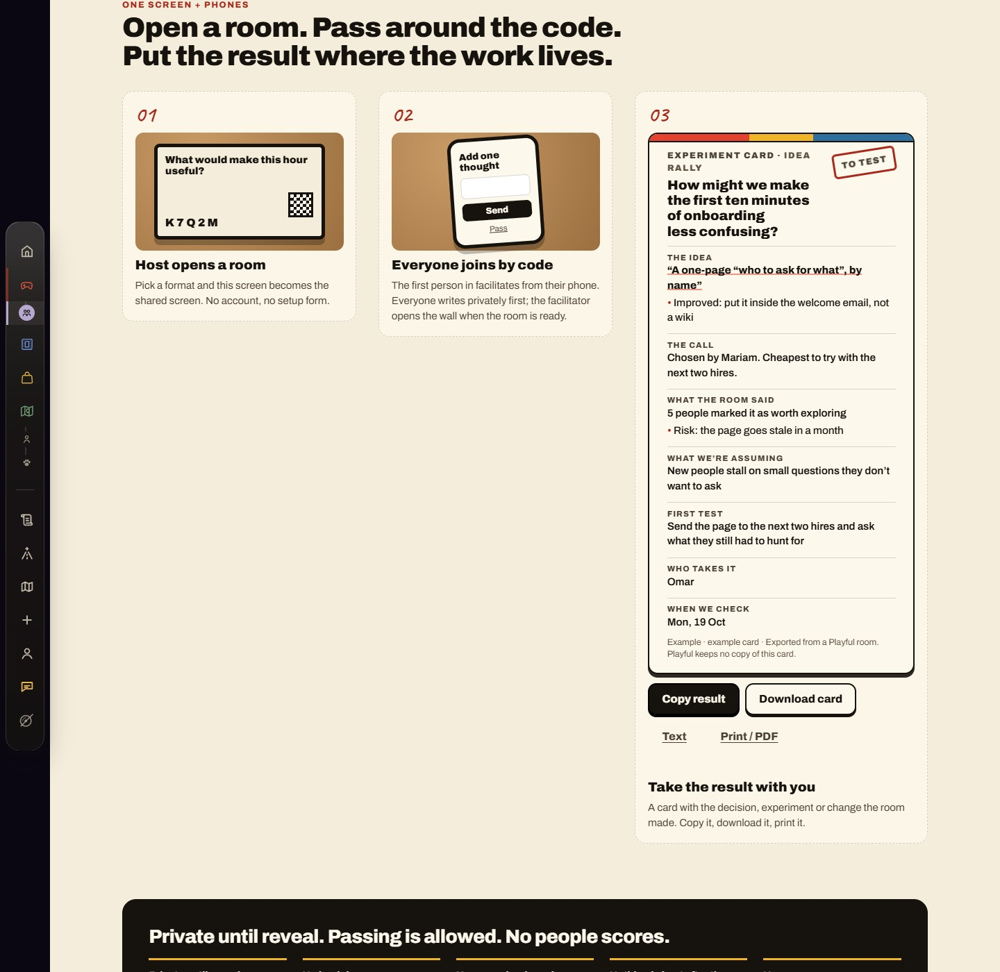
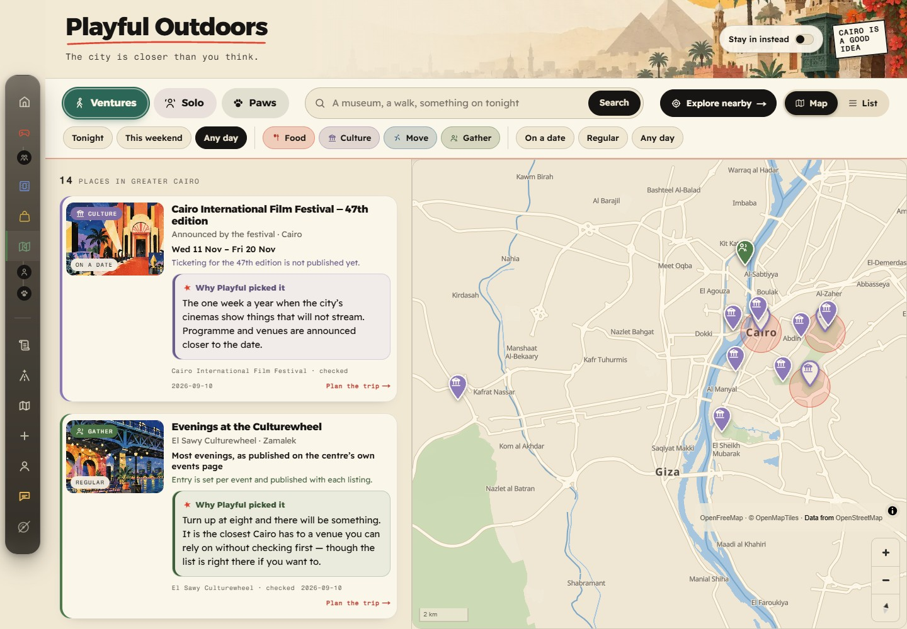
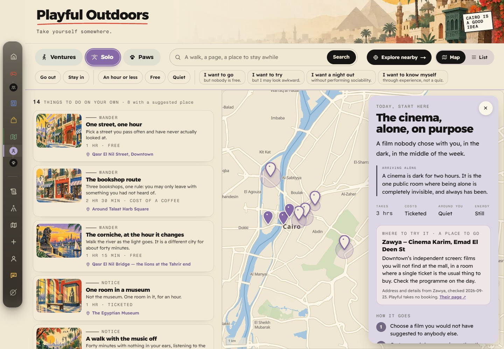
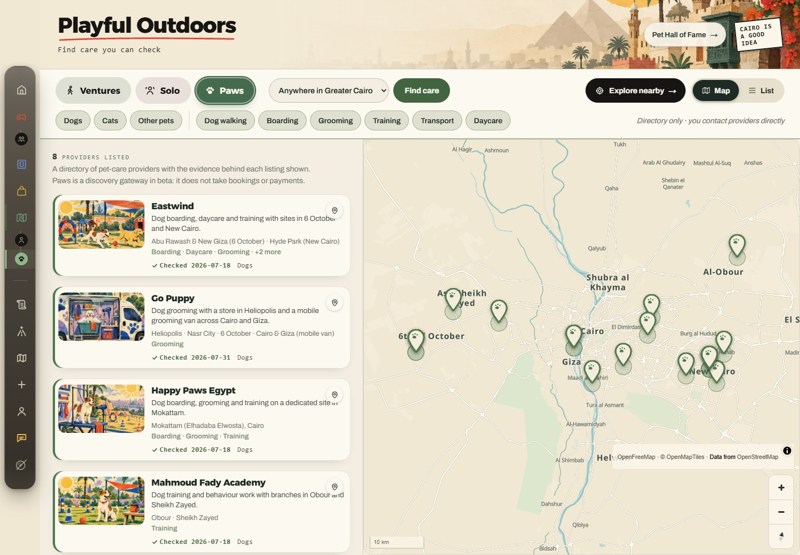
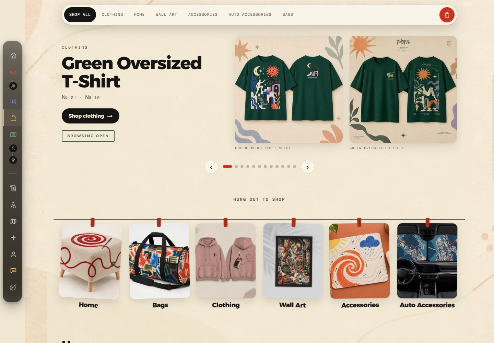
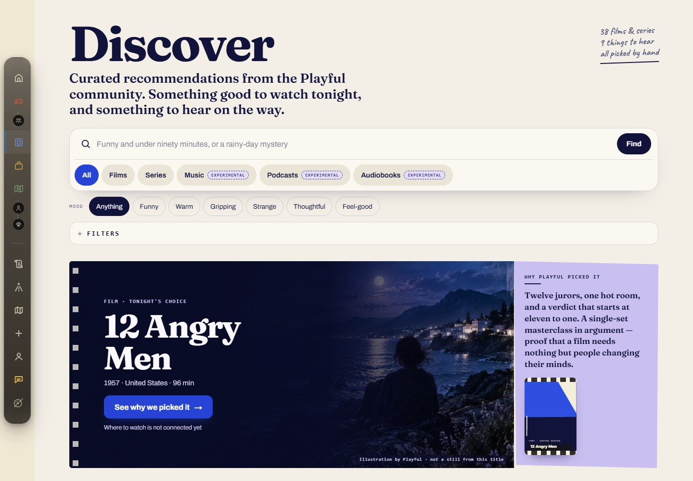
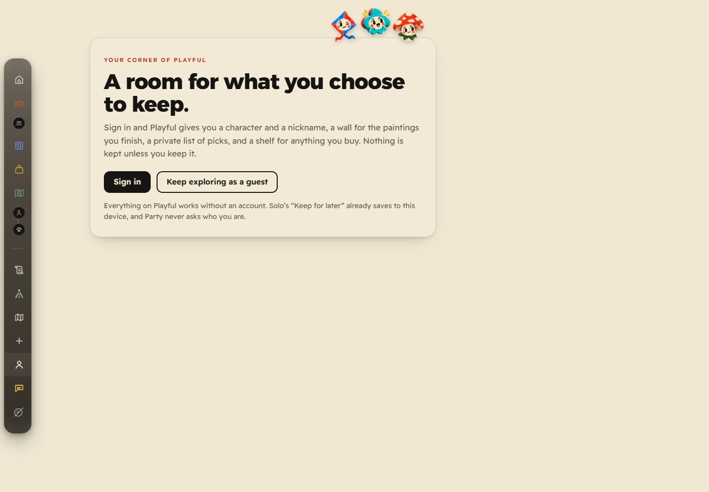

Choose what to build and what to hold back.
I define the purpose, first useful scope, constraints and release checks. A feature in the codebase is not automatically ready for customers.
Playful / Founder, product manager & designer / 2026
Playful is where I take a product beyond the design file. I shape the experience, direct AI-assisted development, inspect the working software and build the tools needed to run it.

01 / The idea
Playful grew from the things I enjoy: games with friends, exploring Cairo, making things and caring for animals. The product brings those interests together without making every experience behave like the same app.
I define the purpose, first useful scope, constraints and release checks. A feature in the codebase is not automatically ready for customers.
A player needs a fast join flow. A workshop needs privacy. A day out needs a place and a plan. Those differences shape the screen, not just its colour.
Paper textures, illustrations, game covers and warm colours create a recognizable family. Clear labels and readable panels keep the artwork from becoming the instructions.
Claude and ChatGPT help implement and explore. I remain responsible for the brief, product decisions, integration and acceptance of what ships.
02 / Play together
Party puts hosting and joining next to each other. Game cards show the player range, time and premise before someone opens a room. The current lineup includes word association, memory, social dilemmas, a rescue relay and stealth games, with past experiments kept separate.
Select any project screen to inspect it at full size.

The display carries progress and reveals. Phones carry private answers and controls. Joining by code avoids turning a casual game night into an account-setup task.
Room identity, game state, permissions and separate host/player views support different formats. Reconnection and recovery matter as much as the first successful join.
03 / Work together
Party for Teams extends the room system into four working formats: Warm Start, Idea Rally, Team Reset and Room Vote. Each is organized around a job and a takeaway, rather than a list of workshop features.


People contribute without performing for the room. Passing is allowed. The facilitator can pace the session but cannot inspect someone else's unfinished answer.
The interface records the room's signal separately from the named decision-maker's call. An experiment card is not final until its required fields are complete.
Server-side views only send permitted fields to the wall and each phone. Drafts and ballots are not merely hidden with CSS. End-to-end checks inspect response data for leaks.
Commands carry request IDs and the phase version they came from. Retries do not duplicate an action, and a stale command cannot change the next stage.
04 / Head outdoors
Outdoors connects Ventures, Solo and Paws. Ventures brings together Cairo places and events, while Solo starts from the hesitation behind going alone. Paws adds pet-care discovery with direct provider contact rather than a booking promise.



I separate original suggestions from externally sourced listings, and illustrations from photographs. A recommendation can be warm and personal without pretending to be verified information about a venue.
05 / Find and keep



The profile brings together a character, nickname, private picks, optional artwork journeys and a separate ownership shelf. Its read model resolves identity from the signed-in session, not a user ID supplied by the browser.
Shared search matches real catalogue records and routes people to the relevant product. It does not pretend a basic name-and-place search understands every mood. More specific discovery belongs inside the experience designed for it.
06 / Under the hood
A Next.js and TypeScript application connects the products to Supabase authentication and Postgres. Domain-specific data sits alongside shared identity, media, permissions and operating controls. Vercel and GitHub support delivery.
Magic-link authentication supports a common profile. Customer identity does not grant operator access. Orders, access grants and personal artwork remain different records with different rules.
Teams reuses Party's codes, tokens, presence and polling transport. Its own state machine controls collection, reveal and takeaway. Infrastructure is shared, but the purpose is different.
A separate admin surface covers catalogue and media work, orders and access, game content, provider information, feedback and runtime status. Public availability is controlled, not hardcoded into a marketing page.
The codebase also includes Three.js game-world explorations and a separate Cloudflare realtime layer. Their existence is not a claim that every experiment is publicly ready or enabled.
07 / How I build
I work in small, complete flows: define the job and constraints, describe the states, direct the implementation, inspect the browser and compare it with the source. When the result changes, the specifications and checks need to change too.
Checkout, bookings and experimental games need their own readiness checks. Leaving a capability closed can be right even when its UI exists.
I review artwork alongside contrast, touch controls, screen fit, responsive layouts and reduced-motion behaviour. The visual world should support the task.
A privacy promise needs a response-data check. A workshop needs a valid takeaway. A controller needs recovery when its connection drops. Those are design acceptance criteria.
I use a video analyzer in my building workflow to flag mid-flow failures and layout changes a still image misses. I confirm its findings in the product before making changes.
08 / What exists today
Public screens and catalogue counts checked on 6 October 2026, production build 2cb1f28. Technical descriptions checked against that build's source. This is evidence of building and product judgment, not commercial traction. Checkout remains closed, games and Teams are beta, and Discover has experimental categories and no connected streaming availability.